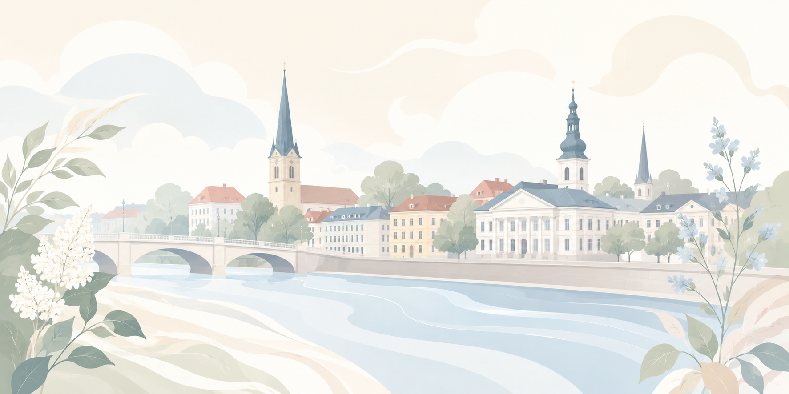

Kuidas seda kasutada?
Iga plokk sisaldab head ja halba näidet. Kõik plokid on vaikimisi avatud, et automaatsed tööriistad näeksid võimalikult palju testitavat sisu.
Mõne leheülese kriteeriumi puhul on kasutatud iframe-näidet, sest ühel HTML-lehel ei saa korraga
olla nii korrektne kui vigane title või lang.
1. Tajutav
1.1.1 Non-text Content
Dekoratiivpildil on tühi alt-atribuut.

Pildil puudub alt-atribuut.
1.3.1 Info and Relationships
| Päev | Aeg |
|---|---|
| Esmaspäev | 09:00–17:00 |
| Päev | Aeg |
| Esmaspäev | 09:00–17:00 |
Silt, väljarühma seos ja tabeli päised puuduvad või on semantika eemaldatud.
1.3.2 Meaningful Sequence
1. Samm
Vali teenus.
2. Samm
Sisesta andmed.
Visuaalne järjekord ja DOM-i järjekord kattuvad.
2. Samm
HTML-is esimene, aga visuaalselt teine.
1. Samm
HTML-is teine, aga visuaalselt esimene.
CSS order muudab nähtavat järjekorda, kuid ekraaniluger loeb DOM-i järjekorras.
1.3.5 Identify Input Purpose
Sisendite eesmärk on programmiliselt määratav sobivate
autocomplete-atribuutide abil.
Väljade eesmärk on nähtav, kuid programmiliselt pole sobivate
autocomplete-väärtustega määratud.
1.4.3 Kontrastsus (miinimumnõue)
Selle teksti kontrastsus on piisav.
Selle teksti kontrastsus on liiga nõrk.
1.4.4 Resize Text
Nupp suurendab ainult teksti 200%, mitte kogu plokki transformiga.
Paindlik tekstiplokk
See plokk võib kasvada kõrgusesse. Kui tekst suureneb, ei lõigata sisu ära.
Fikseeritud kõrgus ja overflow: hidden lõikavad suurendatud teksti ära.
Piiratud plokk
Kui tekst suureneb, siis osa sisust kaob kasti sisse ära ning kasutaja ei pruugi kogu sisu näha.
1.4.5 Images of Text
Erihind ainult täna
Tekst on päris tekstina, seega seda saab suurendada ja kohandada.

Tekst on pildi sees. Alt-tekst aitab mõista sisu, kuid tekst ise ei ole kasutaja jaoks päris tekstina kohandatav.
1.4.10 Reflow
Kitsas vaateaken: kaardid liiguvad üksteise alla.
Kitsas vaateaken: fikseeritud laiusega plokid tekitavad horisontaalse kerimise.
1.4.11 Non-text Contrast
Nupu piir ja ikoon eristuvad taustast piisavalt.
Nupu piir ja ikoon ei eristu taustast piisavalt.
1.4.12 Text Spacing
Tekst jääb loetavaks ka siis, kui reavahe, sõnavahe ja tähevahe suurenevad.
Kui tekstivahed suurenevad, võib see fikseeritud kõrguse tõttu lõikuda või kattuda.
2. Kasutatav
2.1.1 Keyboard
See näeb välja nagu nupp, kuid div ei ole vaikimisi klaviatuuriga kasutatav.
2.2.1 Timing Adjustable
Teade aegub, kuid kasutaja saab aega pikendada või ajalimiidi välja lülitada.
Teade kaob kindla aja möödudes ja kasutaja ei saa seda peatada, pikendada ega välja lülitada.
2.2.2 Pause, Stop, Hide
Liikuv tekst käivitub automaatselt, kuid kasutaja saab selle peatada ja uuesti käivitada.
Liikuv tekst käivitub automaatselt ja kasutaja ei saa seda peatada.
2.4.1 Bypass Blocks
Lehe alguses on “Liigu põhisisu juurde” link ja põhisisu on märgitud main-elemendiga.
2.4.2 Page Titled
2.4.3 Focus Order
Fookus liigub loogilises järjekorras.
Positiivse tabindex-i tõttu on fookuse järjekord segane.
2.4.4 Link Purpose (In Context)
2.4.6 Headings and Labels
Konto seadistused
Info
Pealkiri ja silt on liiga üldised.
2.5.3 Label in Name
Visuaalne silt “Otsi” ei sisaldu ligipääsetavas nimes.
3. Mõistetav
3.1.1 Language of Page
3.1.2 Language of Parts
Eestikeelses tekstis võib olla võõrkeelne osa: Terms and Conditions.
Eestikeelses tekstis on ingliskeelne osa märgenduseta: Terms and Conditions.
3.3.1 Error Identification
Vale
Viga on tähistatud, kuid kasutajale ei selgitata, mis on valesti.
3.3.2 Labels or Instructions
Sisesta 11 numbrit ilma tühikuteta.
Püsiv silt ja juhis puuduvad; ainult placeholder ei ole piisav.
4. Toimiv
4.1.1 Parsing
Unikaalsed ID-d ja korrektselt seostatud sildid.
Siin on tegelik topelt-ID probleem DOM-is.
Katkist pesastust ei ole siia lisatud, sest brauser parandab selle sageli automaatselt. Topelt-ID on siiski masinloetav probleem.
4.1.2 Name, Role, Value
Nimi, roll ja olek on programmiliselt määratavad ning olek muutub vajutamisel.
Visuaalselt näeb see välja nagu nupp, aga semantiline roll, ligipääsetav nimi ja olek puuduvad.
4.1.3 Status Messages
Teade ilmub, kuid ekraanilugerile ei anta sellest automaatselt teada.